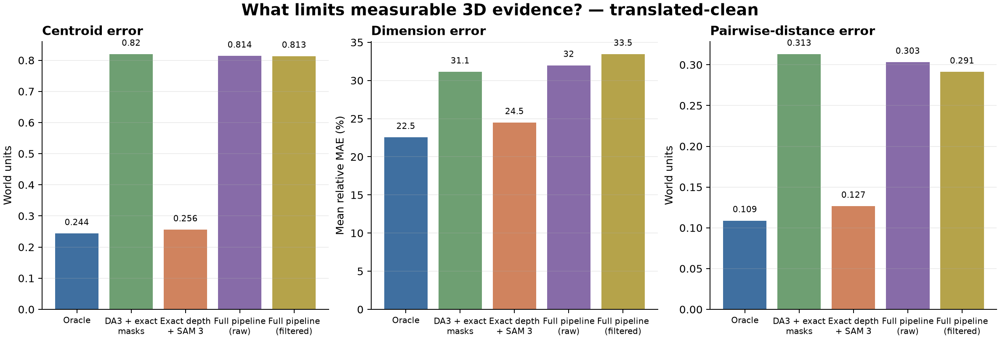

Centroid error—
Dimension MAE—
Pairwise error—
Nearest ordering—
Explore how exact surfaces, learned depth, semantic tracks, and deterministic filtering change the same spatial measurements. Each reconstructed object remains traceable to its source frames and pixels.
With exact depth, SAM 3 remains close to the visible-surface ceiling. Replacing exact depth with pose-conditioned DA3 raises centroid error by about 3.36× and pairwise-distance error by about 2.88×. The raw end-to-end pipeline therefore tracks DA3's geometry error much more closely than SAM 3's mask error.
This is one controlled, pose-conditioned sequence. Exact camera translation supplies metric scale; a fixed or ideal PTZ camera cannot recover that scale from rotational image motion alone.

Nine exact calibrated views
Depth, cameras, masks, scores
Frame and pixel provenance retained
Centroids, dimensions, distances